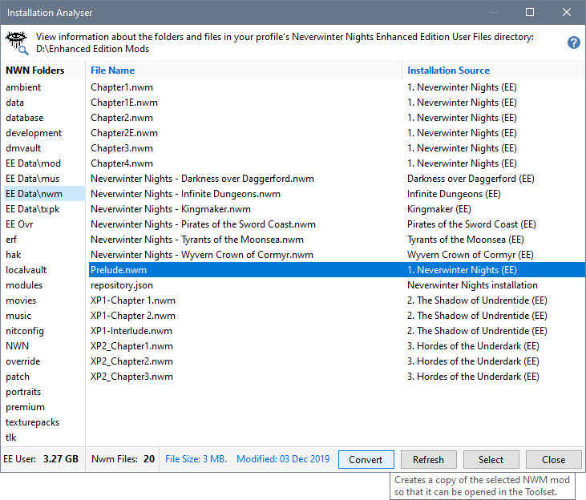
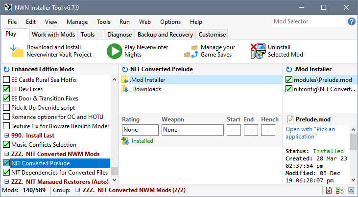

You can't use the Neverwinter Nights Toolset to open Official or Premium Mods because the Toolset does not recognise Mods that have an extension name of NWM.
The Installation Analyser displays a Convert button when a NWM file is selected. When you click the Convert Button, the Installer Tool performs these steps...
- Creates a Mod in the ZZZ. NIT Converted NWM Mods Group, which is added if it does not already exist.
- Copies the selected NWM file to the created Mod's Download folder and changes the extension name to MOD.
- For the Enhanced Edition, the NIT Dependencies for Converted Files Mod is created and contains the files copied from the HK and TLK folders to ensure that any references are satisfied.
- Mod installers are created and automatically installed.
- You can now use the Toolset to open the converted Official or Premium Mod.
When you are finished using the Toolset to examine the mod, you should delete (or at least uninstall) the converted Mods to avoid any confusion when playing the game.
Procedure
- Select Installation Analyser from the Tools menu.
- Select an Official or Campaign Mod from the nwm folder and press the Convert button.

- Press the Close button after the conversion has completed. The converted Mod is selected in the Installer Tool and is ready to be opened with the Neverwinter Nights Toolset.
